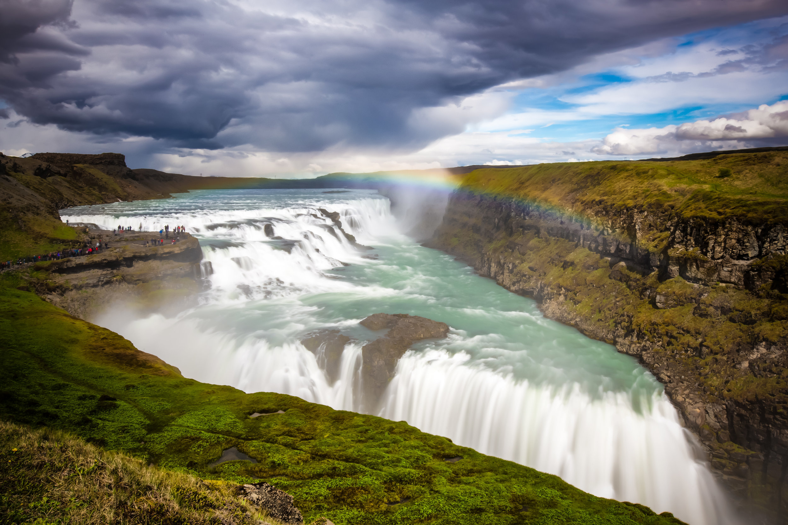
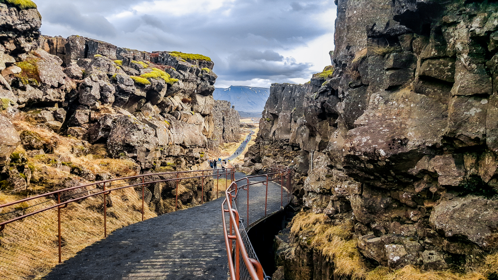

Izland történelme
Izland történelme a 9. századig nyúlik vissza, amikor norvég vikingek és más skandináv telepesek érkeztek a szigetre.
930-ban megalapították az Alþinget, a világ egyik legrégebbi parlamentjét.
A középkor során Izland norvég, majd dán fennhatóság alá került.
A 19. és 20. század fordulóján egyre erősödött a függetlenségi mozgalom, amely végül 1944-ben Izland teljes függetlenségéhez vezetett Dániától.
Az ország azóta is demokratikus berendezkedésű, és gazdaságát főként a halászat, a megújuló energiaforrások és az idegenforgalom határozzák meg.
Természeti csodák

Sarki fény
Az északi fény varázslatos természeti jelenség.

Kék-lagúna
Geotermikus fürdő és gyógyhely.

Vatnajökull gleccser
Európa legnagyobb gleccsere.

Gullfoss vízesés
Izland egyik leglenyűgözőbb vízesése.

Þingvellir Nemzeti Park
Történelmi és geológiai jelentőségű UNESCO Világörökségi helyszín.

Reynisfjara part
Híres fekete homokos part lenyűgöző bazaltoszlopokkal.
Golden Circle
| Þingvellir | 2-3 óra |